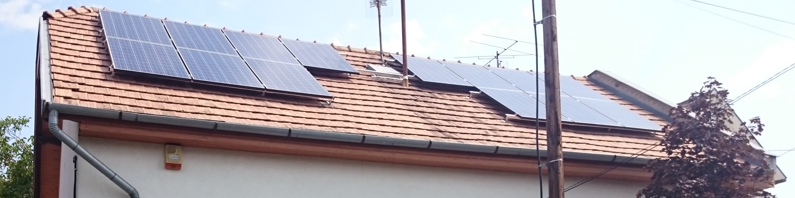
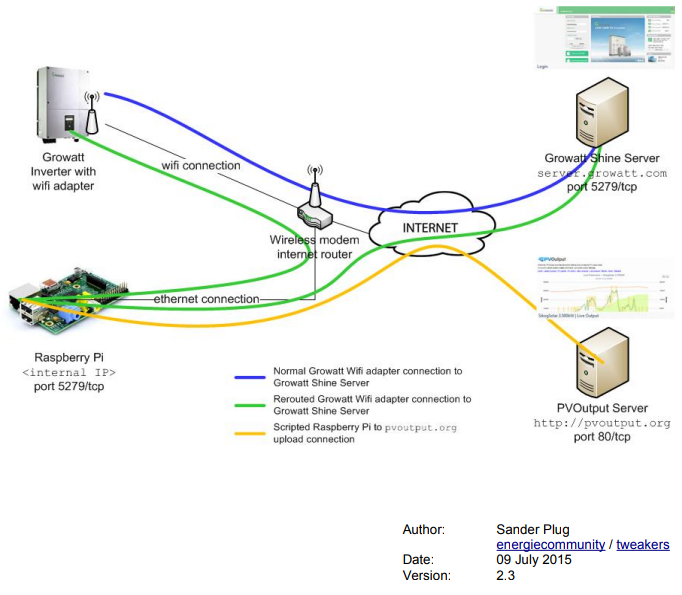
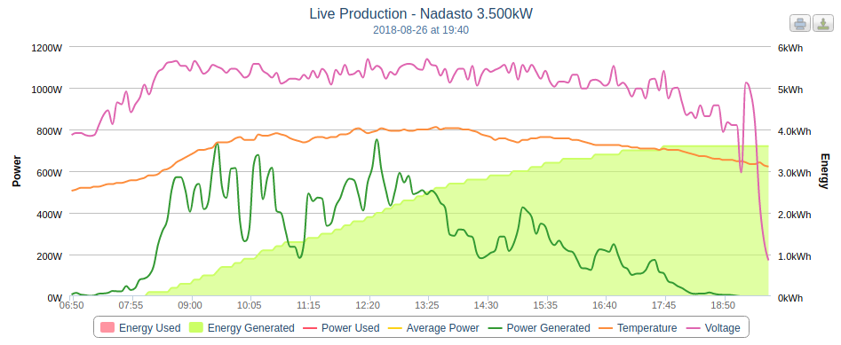

Napelem monitoring
2015-ben került telepítésre egy 3,6 kWp mérető napalemes erőmű a házra. Műszaki jellemzői:
- 14 panel 2 sztringen
- Growatt 3000 TL inverter
- WiFi modul
- Tájolás:Majdnem teljesen déli (207°)
- Dőlésszög:45°
- Részben árnyékolt, mert pont előtte az utcán, szinte középen áll egy villanyoszlop

Az alapvető termelési adatokat a Growatt felületén is tudtam ellenőrizni a kezdetektől, de akkoriban annyira kezdetleges volt a felülete, hogy más megjelenítés után néztem. Így akadtam rá a PVOutput.org felületére, ahol csinosabb felületen látszanak az adatok. Egy gond volt csak vele, hogy a Growatt inverter adatait kapásból nem tudta értelmezni, mert nem készítettek rá interfészt (nem sok jót hallani a Growatt inverterekről, pedig a kedvező áruk ellenére megbízhatóak).
A megoldást egy RaspberryPI-n futó script adta:Az inverter a Raspberry PI-n keresztül kapcsolódik a routerhez. A PI elkapja az inverter által a Growatt szervernek küldött csomagokat. Megkeresi benne a szükséges termelési és egyéb adatokat, feldolgozza és küldi a PVOutput.org felé is. A teljes leírási itt található.
És az eredmény:
Vagy: direkt URL
Energia monitoring
Miután a napelem termelését már láttam a portálokon, kíváncsi voltam, hogyan meg tudom-e mérni a hálózatról vételezett / visszatáplált energiát. Itt a megoldást egy EMONCMS shield és egy Arduino mikrokontroller adta két áramváltó szenzorral. A mikrokontroller adatait ebben az esetben is a RPI dolgozza fel egy python program segítségével és továbbítja az EMONCMS felületre. (Sajnos már nem ingyenes, de nekem van még egy évnyi kreditem. Aztán meglátjuk.)
Időjárás:
Az adatokat egy WeatherSleuth időjárás állomás szolgáltatja és a wifi routeren keresztül publikálja a WeatherUnderground felületére. Az aktuális pestújhelyi időjárási adatokat lásd az oldalsávon.